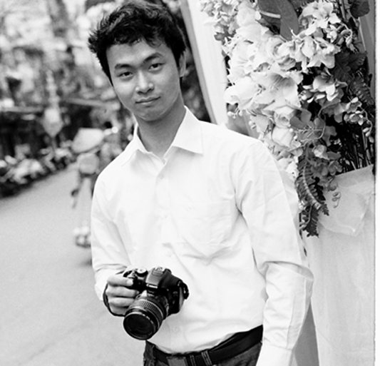

Hello, I’m Quang Hung.
Web developer
and
Designer
and it’s my biggest hobby.

It was the most interesting time in my life when I started to
use Adobe software to draw picture, make the branding
package or use a camera to take a photo by myself.
In addition, the concept about color and layout, the knowle-
dge of photography and advertising built in me the sensiti-
vity for creative thinking and interpersonal differences.
I got the highest achievement in two graduation
degrees from two institutions, FPT University
(Software Engineering ) and Arena Multimedia
(Design), at the same time.
MY LASTEST WORK
PHOTOGRAPHY